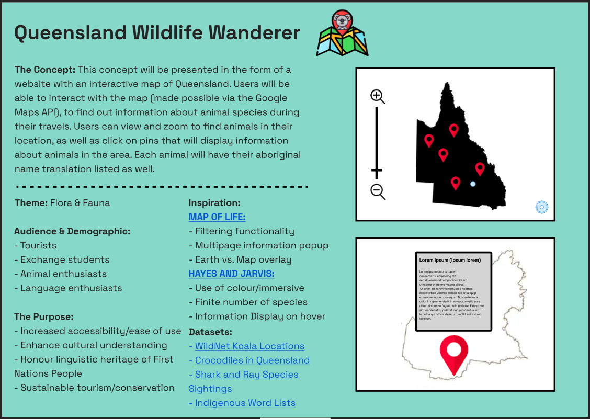

Design Ideation & Concept

My journey in this course started by first formulating my own idea of what my project could look like. The poster in the image above is the culmination
of the individual ideation work I completed over weeks 1 to 3. In order to reach this idea I participated in various learning activities in studio sessions.
One activity I found particularly valuable was the group work conducted in studio week 1 that placed the foundation for my individual work. Working in groups
of 5 we selected a theme and group members tried to find relevant datasets associated with the selected brief, and think of unique ideas for presentation of
the data. Our team started with a general brainstorm on sticky notes and eventually were able to find four different datasets that we thought could be combined
in a unique way. During the first round my team chose flaura and fauna as the theme and during the second round we built off some concepts another team had already
come up with. I have included images in the gallery below of the output of our work.
I applied the ideas and methodologies learned during the first 2 weeks to my own work. I selected flaura and fauna as my theme and envisioned creating an interactive
map where users can find out more information about animal species in Australia. Overall I enjoyed the process of coming up with this idea, however one thing I really
struggled with was coming up with a novel feature for my application. Because my target users were primarily tourists and exchange students I though my novel feature
could be including aboriginal language translations.